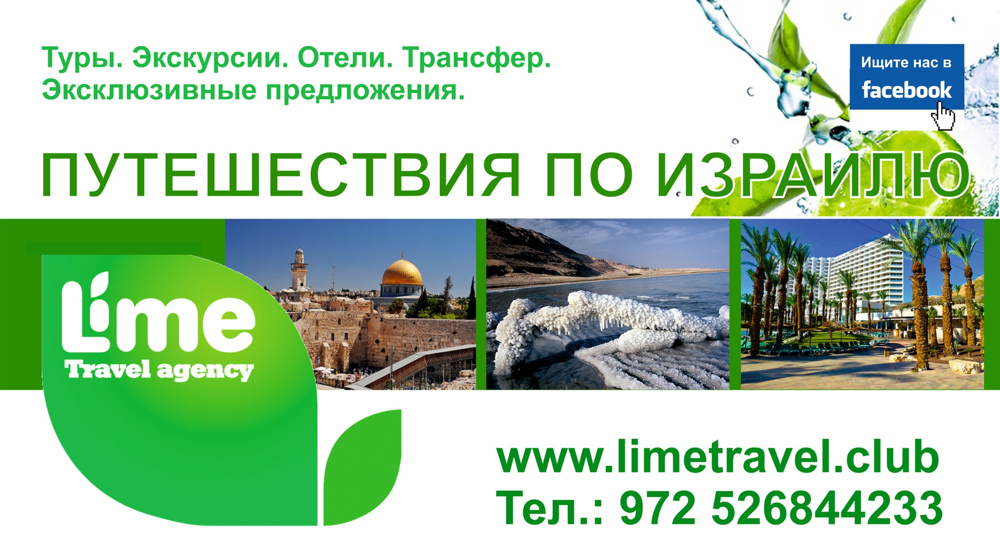

Welcome to Компенсация НДС 2020
Возврат 13 процентов за медицинские услуги: размер вычета
2020.11.16 10:14Бесплатная консультация по тел. 8 (800) 700-99-56 доб. 298 Эксперт в Декларациях nalog-expert.com Экспертный портал консультаций по декларациям и налогам Бесплатная консультация по телефонам* По России бесплатно 8 800 700-99-56 доб. 298 Ежедневно с 9.00 до 23.00 *Реклама партнеров Москва и область +7 499 110-68-15 Ежедневно с 9.00 до 23.00 Санкт-Петербург и область +7 812 317-72-80 Ежедневно с 9.00 до 23.00 Задать вопрос консультанту Закрыть меню МЕНЮ Декларация 3-НДФЛ Образцы документов Оплата налогов Возврат налогов Имущественный вычет Стандартный вычет Инвестиционный вычет Социальный вычет Автомобильное право Гражданское право Жилищное право
Главная » Возврат налогов » Социальный вычет » Возврат 13 процентов за медицинские услуги: пошаговая инструкция по получению вычета через налоговую
Возврат 13 процентов за медицинские услуги: пошаговая инструкция по получению вычета через налоговую
Статью опубликовал: Наталья НовиковаОбновлено: 14.02.2018
Нередко в жизни граждан возникают моменты, когда необходимо оплатить дорогостоящее или длительное лечение. Они могут возникать ввиду экологических факторов, аварий, несчастных случаев и во многих ситуациях иного рода. К сожалению, платная медицина в России представлена по-настоящему «злыми» ценами. Оплата процедур и лекарственных средств опустошает карманы граждан и заставляет существенно урезать затраты во всех остальных аспектах жизнедеятельности. Чтобы помочь гражданам и улучшить их финансовое состояние, государство установило возможность получения, так называемого социального налогового вычета. В этом случае он поступает к гражданину после оплаты лечения в виде частичной компенсации стоимости ранее совершенных медицинских процедур и приобретенных препаратов. Разумеется, суммы получаются небольшие, однако ощутимые. С их помощью, так или иначе, можно улучшить уровень жизни гражданина. В данной статье рассмотрим, как оформить возврат 13 процентов за медицинские услуги.
Возврат 13 процентов за медицинские услуги
Содержание
1 Что такое налоговый вычет на лечение 2 Размер налогового вычета 3 Когда положено получение возврата налога на компенсацию медицинских расходов 4 Руководство по получению вычета 4.1 Видео – Возврат 13% подоходного налога на лечение 4.2 Проводим подготовку и оформление документов 4.3 Декларация на возврат 13 процентов за лечение 4.4 Передаем собранные бумаги на проверку 4.5 Ожидаем вердикта налоговой службы 5 Важные нюансы 6 Подведем итоги 6.1 Калькулятор расчёта суммы возврата налога при получении медицинских услугЧто такое налоговый вычет на лечение
Под вычетом понимается часть поступающих к физическому лицу средств, которая не подлежит обложению налоговыми сборами. Так, вы имеете право на частичное возвращение уплаченных в казну государства средств, ранее по ним уплаченных. Для этого необходимо, чтобы ситуация соответствовала следующим аспектам:
получающий лечение гражданин должен иметь официальное трудоустройство, то есть получать зарплату «белую», с которой налоговые агенты, являющиеся работодателями, ежемесячно производят отчисления средств в бюджет страны, так как она считается основным доходом физического лица; проходящий лечение человек обязан совершить выплаты на медицинские процедуры и лекарственные препараты из собственного кармана, если за него платил кто-то другой, вам в получении вычета будет в обязательном порядке отказано.Оплачивать лечение и получать средства за него можно также родственникам, при этом вы остаетесь законным претендентом на обладание государственной компенсацией.
Однако, если лечились вы, а платили за вас родители, братья, сестры или другие родственники, вернуть средства могут они, а не вы
Приведем пример. У Павла заболела мама-пенсионерка, не имеющая средств на закупку дорогих препаратов и прохождение различных медицинских процедур на базе городской больницы. Поскольку Павел этими средствами обладал, он, не раздумывая оплатил для мамы все нужные наименования.
После прохождения лечения, мама сохранила чеки за лекарства и процедуры. Суммировав затраченные средства, указанные в платежных бумагах, Павел заполнил соответствующие документы, написал заявление в налоговую службу России и вскоре получил некоторую денежную компенсацию затрат. Поскольку платежи совершались именно им, непосредственно со счета банковской карты, он имеет полное право на получение возврата. Если бы заявление написала мама, то в налоговой службе ей бы разъяснили, что, поскольку она не является плательщикам, возврат денег ей невозможен.
Обратите внимание на важнейший нюанс! Налоговая служба Российской Федерации не принимает голословных заявлений, касающихся прохождения лечения, а также необходимости проведения медицинского вмешательства. Диагноз, а также направления на прием лекарственных средств и получение лечения в медицинском учреждении должны быть выданы непосредственно лечащим врачом, являющимся специалистом в области. Проще говоря, вряд ли у вас примут заявление о лечении гастрита, если направление на процедуры было написано офтальмологом или ортопедом.
Покупка лекарств, не указанных в списке рекомендованных лечащим врачом, рассматривается, как личная инициатива больного или его родственника. Поскольку больной не обладает медицинским образованием и не может официально выступать собственным специалистом, отслеживающим самочувствие объективно, такие затраты возмещению государственными компенсациями не подлежат.
Размер налогового вычета
Поскольку возврат любых средств налогоплательщику производится из уплаченного им ранее в государственную казну налога на доходы физического лица, равного 13% от полученных налогоплательщиком средств, возврат компенсации возможен исключительно по искомой ставке в 13%. Получается, что от суммы подтвержденных платежными документами затрат, гражданин может вернуть 13%.
Благодаря социальному вычету можно компенсировать затраты на лечение родителей, если вы оплачивали их из собственного кармана
Если лечение обошлось дорого, эта величина является весьма ощутимой, поэтому не спешите отмахиваться от «копеек». Да, получить от нашего государства приемлемую сумму практически невозможно, однако, как-то компенсировать затраты необходимо, ведь у большинства простых обывателей каждая копейка на счету.
Особенно пригодится этот вычет семьям малообеспеченным, но при этом не имеющим льготы, которые вынуждены экономить. Даже маленькая сумма для них способна изменить сложившуюся ситуацию к лучшему.
Как мы уже сказали, к возврату положена сумма, составляющая 13% от стоимости проводимых для гражданина медицинских процедур, а также употребляемых им лекарств, однако, есть у нее и более конкретное ограничение. Верхний предел доступной налогоплательщику суммы по социальному вычету на лечение составляет 120 тысяч российских рублей. Однако вы должны понимать, что получить можно не искомые средства, а лишь 13% от них, то есть 15 тысяч 600 рублей (120 000 * 13% = 15 600).
Хотим обратить внимание налогоплательщиков на то, что этот денежный предел актуален не только для возврата налога на компенсацию расходов по получению медицинской помощи, но также для остальных разновидностей социального вычета, к коим относится:
получение образования ; осуществление взносов пенсионной направленности; внесение средств в качестве взноса по добровольному страхованию; расходы на осуществление благотворительной деятельности.Суммарно вычеты по каждому из этих направлений, получаемые одновременно, то есть в один налоговый период, не могут превышать искомой суммы, то есть максимально по всем направлениям в год гражданину положены 15 тысяч 600 российских рублей.
Однако, существует перечень услуг медицинского характера, определяемых как дорогостоящие. На них обсуждаемое выше ограничение не распространяется. За полную цену искомых услуг вы имеете право получить компенсацию в размере 13% от затрат. К этим услугам относится экстракорпоральное оплодотворение, иными словами, искусственное оплодотворение яйцеклетки женщины, для создания эмбриона. Цена такой процедуры в разных регионах варьируется, но в среднем составляет, согласно статистике, от 20 тысяч рублей до 270 тысяч, если самой процедуре оплодотворения сопутствуют некоторые дополнительные услуги.
Эта услуга – последняя надежда многих россиянок, мечтающих о ребенке, однако, имеющих некоторые проблемы с натуральным становлением беременными
Ознакомиться с другими элементами перечня дорогостоящих медицинских процедур можно, прочитав нашу специальную статью .
Некоторые процедуры, которые не ощутимо бьют по карману, также находятся в искомом списке. Даже если кажется, что получаемое вами лечение к нему не относится, все же стоит свериться с документом, так как медицинские услуги с каждым годом становятся все дороже, а перечень, соответственно, все шире.
Приведем пример. Варвара Николаевна мучилась зубными болями и решила в 2016 году обратиться в стоматологию, чтобы получить квалифицированную медицинскую помощь. В результате она вынуждена была пройти курс лечения, который обошелся ей в 140 тысяч российских рублей. Поскольку зубные боли и их причины имели запущенное состояние, дополнительно она была вынуждена отдать 200 тысяч рублей на проведение операционного вмешательства, необходимого для частичного восстановления вылеченных зубов. Операция является официально одним из пунктов перечня, определенного правительством, содержащего наименования, относящиеся к лечению дорогостоящему.
В год обращения в стоматологию Варвара Николаевна получила доход в размере полмиллиона российских рублей, соответственно, с этих средств ее налоговый агент (организация-работодатель) произвел отчисления в государственную казну, в размере 62 тысяч российских рублей.
Затраты на лечение зубов, к сожалению, не находятся среди наименований из списка дорогостоящих медицинских процедур. Поскольку максимально доступная к покрытию сумма в этом случае составляет 120 тысяч рублей, именно с нее Варваре Николаевне возвратят 13%, то есть, 15 тысяч 600 рублей, оставшиеся 20 тысяч разницы, между положенной суммой и суммой затрат, к сожалению, просто сгорают.
Что касается операции, она все же является дорогостоящей медицинской процедурой и входит в правительственный список, следовательно, от ее полной величины Варвара Николаевна может получить возврат в размере 13%.
Рассчитаем всю сумму: (120 000+200 000) * 13% = 41 тысяча 600 российских рублей.
Как мы помним, за текущий налоговый период Варвара Николаевна с получаемых на рабочем месте трудовых доходов перечислила в государственную казну 62 тысячи рублей. Эта сумма превышает рассчитанную сумму налогового вычета, следовательно, все указанные выше средства подлежат выплате Варваре Николаевне в полном размере.
Более подробно о налоговом вычете за стоматологические услуги вы узнаете из нашей статьи . Расскажем об особенностях получения данного вычета и необходимых документах.
Когда положено получение возврата налога на компенсацию медицинских расходов
Возврат части налоговых отчислений, уплаченных ранее в бюджет страны, при получении лечения возможен в следующих случаях.
Если вы потратили денежные средства на лечение: собственное; мамы или папы; мужа или жены; детей, не достигших совершеннолетнего возраста. Услуги предоставлялись лицензированным медицинским учреждением, ведущим деятельность на территории Российской Федерации. Все процедуры, за которые пришлось выложить кровно заработанные средства, входят в определенный правительством страны перечень, изданный в 2001 году. Услуги были получены не бесплатно, а оплачивались. Те процедуры, которые были покрыты по обязательному медицинскому страхованию, компенсировать нельзя, так как деньги за них не вносились. Покупка лекарств также должна осуществляться только для самостоятельного приема или в пользование одному из ближайших членов семьи, то есть несовершеннолетним отпрыскам, родителям или супругу. Лекарства, как и процедуры, в обязательном порядке назначаются лечащим врачом, имеющим определенную классификацию. Медицинские препараты также должны входить в специализированный список, определенный на государственном уровне, выпущенный в постановлении от 2001 года.Существует возможность получить возврат налога, если было оплачено медицинское страхование добровольного характера. В этом случае соответствовать законодательным нормам должны следующие обстоятельства.
Вы оплатили взносы по страхованию, заключенному посредством оформления бумажного договора, о совершении медицинского страхования добровольной направленности, то же касается и ближайшего круга семьи. Договором по страховке была предусмотрена оплата медицинских услуг, связанных исключительно с лечением. Компания, осуществляющая страховую деятельность, имела лицензию на осуществление деятельности соответствующей направленности, и заключила с налогоплательщиком договор.Руководство по получению вычета
Процесс по получению денежной компенсации от государства отнимает у граждан много времени. Все потому, что необходимо не только собрать и оформить необходимый пакет документов, но и дождаться, пока отделение Федеральной налоговой службы, куда они сданы, осуществит все необходимые проверки и выдаст положительное решение о передаче денежных средств налогоплательщику.
Какие этапы нужно пройти для получения компенсационных средств
Хотим напомнить, что с наступлением 2016 года стали действовать новые законодательные нормы, коснувшиеся способа получения денежных средств от государства по возврату налога социальной направленности. Так, до вступления их в силу, денежные средства можно было получить только через налоговую инспекцию, то есть единовременной выплатой. Однако теперь доступна возможность получения средств через организацию-работодателя, посредством приостановления отчислений в государственную казну налога на доходы физического лица. Иными словами, пока не будет выплачена полная величина полагающихся вам средств, от вашей заработной платы прекращают отчислять по 13% ежемесячно и переводить в государственную казну.
Новый способ обладает следующими плюсами:
если гражданин имеет большую зарплату, то почувствует к ней и существенную прибавку, значит, на определенное время благосостояние его семьи возрастет ощутимо; не придётся ждать окончания налогового периода, чтобы обратиться в налоговую инспекцию с заполненными документами на получение вычета, как в первом случае.Несмотря на очевидные достоинства нового способа, мы считаем, что наиболее приемлем старый, проверенный метод, так как он позволяет получить крупную сумму сразу, не раздробленную на кусочки. Представьте, что можете подождать до конца года и получить деньги разом, а затем отправиться и купить, например, телевизор, или же будете откладывать на него в течение всего следующего года.
Однако если сумма за лечение возвращается небольшая, можно получить ее и на рабочем месте, так как некоторые компенсационные выплаты за лечение возвращаются работнику с первым же получением заработной платы.
Процедура получения вычета через налоговую инспекцию представляется нам наиболее затруднительной, именно поэтому мы представляем вам пошаговую инструкцию по его прохождению, которая в дальнейшем пригодиться тем, кто встал на путь получения средств самостоятельно, не имея никакого предоставления о предстоящих трудностях.
Видео – Возврат 13% подоходного налога на лечение
Проводим подготовку и оформление документов
В первую очередь, гражданин, претендующий на получение вычета, должен заняться подготовкой и сбором документации, содержащей сведения, необходимые для осуществления процесса.
Таблица 1. Какие документы нужно подготовить, чтобы получить налоговый вычет?
Документ Где взять и как заполнить
Справка 2-НДФЛ
Справка с маркировкой 2-НДФЛ – первый номер в нашем списке. Она содержит информацию, подтверждающую, что гражданин является добросовестным налогоплательщиком, то есть: является официально трудоустроенным сотрудником; получает доход и производит с него ежемесячные отчисления налога на доходы физического лица в государственную казну. Поскольку содержащиеся в справке сведения относятся к месту работы гражданина, получать документ он должен в бухгалтерском отделе организации-работодателя. Для ее выдачи необходимо написать соответствующее заявление. Выдается такая справка на конкретный налоговый период.Договор об оказании медицинских услуг
Официальный договор на бумаге, заключенный с медицинской организацией, оказывающей услуги налогоплательщику. Он заполняется перед началом процедур и хранится до их окончания. Не выбрасывайте его после, если хотите получить вычет вовремя, так как получить его копию в медицинском учреждении вы по закону имеете право, однако, процедура часто затягивается на долгий срок.Копия лицензии медицинского учреждения
Копия лицензии медицинского учреждения, в котором проходило лечение налогоплательщика – еще один обязательный элемент. Без его представления в налоговую службу в получении денежной компенсации вам неминуемо откажут, так как средства могут быть возвращены только за оказание помощи от аккредитованной организации и никак иначе.Справка об оплате медицинских услуг
Справка или иной платежный документ, свидетельствующий, что была произведена оплата оказанных пациенту услуг. Выдается, как правило, в кассах медицинских организаций.Направление лечащего врача
Направление от лечащего врача, отписанное на: прохождение конкретных процедур; приобретение лекарственных препаратов. Кроме того, лучше запастись отдельной бумагой в виде медицинского заключение от доктора, подтверждающее необходимость прохождения медицинской помощи в формате конкретных лечебных процедур и употребления лекарств.Чеки на покупку лекарств
Чеки и другие платежные документы, подтверждающие покупку рекомендованных доктором лекарств.Документы, подтверждающие родство
Если денежные средства вносились в качестве оплаты медицинского вспоможения родственникам, то есть супругу, несовершеннолетним отпрысками или родителям, необходимо предъявить документы, подтверждающие реальное наличие родственных связей, то есть: ксерокопии паспорта; свидетельства о рождении; свидетельства о вступлении в брак.Реквизиты банковской карты
Необходимо также предоставить реквизиты банковского счета или счета пластиковой карты налогоплательщика, на который налоговая служба обязана перевести полагающиеся денежные средства.Декларация 3-НДФЛ
Декларировать расходы, понесенные в связи с получением лечения, нужно с использованием бланка под маркировкой 3-НДФЛ. О том, что он собой представляет, мы поговорим в следующем шаге инструкции.Заявление на возврат НДФЛ
Заявление на получение частичного возврата подоходного налога. Оно не составляется самостоятельно, а скачивается с официального электронного ресурса Федеральной налоговой службы или по ссылке ниже. Затем производится интуитивное заполнение пустующих граф.Скачать бланк заявления на возврат НДФЛ
Обратите внимание! Если за 12 месяцев календарного года вы сменили несколько мест работы, придется предоставить справку из обеих организаций. Чаще всего 2-НДФЛ выдается на старом рабочем месте при увольнении, так что вам просто нужно будет найти ее среди документов. Вторая бумага будет выдана уже новым работодателем. Как заполнять справку 2-НДФЛ, найдете в нашей специальной статье .
Поскольку в большинстве случаев требуется предоставление копий, а не оригиналов искомых документов, необходимо провести самостоятельное заверение каждой ксерокопии. Сделать это не трудно. Не нужно обращаться в нотариальную контору и платить лишние деньги, просто завизируйте каждую страницу личной подписью, расшифруйте ее и напишите рядом фразу «копия верна». В конце обязательно проставьте актуальную дату.
Обратите внимание! Заверить необходимо не каждый документ, а именно каждую страницу.
Образец заверения документов
Декларация на возврат 13 процентов за лечение
Заполнение декларационного бланка 3-НДФЛ – один из самых трудных для новичка этапов, хотя на самом деле, процедура внесения в него сведений довольно проста. Вся нужная информация имеется у вас на руках в сопутствующих ей документах, необходимо только правильно вписать ее в соответствующие графы.
Этот унифицированный декларационный бланк используется физическими лицами для получения средств по вычету любой направленности. Ввиду этого обстоятельства, Федеральная налоговая служба подготовила для налогоплательщиков специализированное программное обеспечение, скачивающееся на официальном на сайте службы . Полученный электронный помощник не только самостоятельно формирует декларацию в итоговом виде, но и сокращает временные затраты на заполнение. Во время его использования перед вами будут появляться графы, которые необходимо будет заполнить. Сведения для заполнения ищите в подготовленных ранее документах, представленных в списке первого шага.
Заполнить бланк самостоятельно не намного сложнее, чем воспользоваться программой
Кроме того, необходимо соблюдать нормы оформления. Бланк должен быть напечатан ровно, чтобы форма не нарушалась, на листе:
формата А4; белого цвета; специальной бумаги для печати.Старайтесь не допускать ошибок при внесении сведений в декларацию, так как даже малейшая невнимательность грозит вам исправлением бланка, а также увеличением срока получения денежных средств. В особенно запущенных случаях налогоплательщики получают штрафы за сведения, которые налоговая инспекция сочтет заведомо ложными.
Скачать бланк 3-НДФЛ
Передаем собранные бумаги на проверку
Теперь, когда все подтверждающие право на получение вычета документы собраны и на основе имеющихся в них сведений составлена налоговая декларация 3-НДФЛ, можно приступать к самому легкому шагу процесса: передаче пакета бумаг на проверку в Федеральную налоговую службу, точнее ее местное отделение, к которому налогоплательщик относится ввиду адреса его официальной прописки. Сделать это можно несколькими способами, каждый из которых по-своему хорош.
Вариант 1. Личное появление в налоговой инспекции. Многие налогоплательщики практикуют именно этот вариант, так как он кажется им наиболее надежным. Действительно, личное присутствие во многом облегчает процедуру психологически, так как налогоплательщик лично может наблюдать прием документов в обработку, а также задавать интересующие его вопросы специалистам налоговой службы, занимающимся его делом.
Существенный минус способа состоит в необходимости потери большого количества времени, очень часто отнимаемого в ущерб работе или личной жизни. Подумайте, вам придется доехать до налоговой инспекции, получить талон, простоять в очереди и только затем попасть на прием к специалисту, затем вернуться обратно. Однако в некотором смысле эти временные затраты оправданы, так как специалист сразу же просмотрит предложенную на проверку документацию и укажет вам на ошибки, требующие корректировки.
Вариант 2. Передача документов осуществляется посредством почтового отправления. Актуальным этот способ является в том случае, когда отправление производится в формате ценного письма, к которому подшивается опись, содержащая сведения по вложениям внутри него. Кроме того, в обязательном порядке необходимо заказывать уведомления о получении посылки, так как ввиду человеческого фактора специалисты могут утерять документы и утверждать в дальнейшем, что они не поступали. Имея на руках уведомление вы сможете без возникновения проблем доказать собственную правоту.
Экземпляры почтовой описи также нужно делать в количестве двух наименований, с той же целью – чтобы иметь на руках доказательство. Внутри этой описи указываются все вложенные в отправление бумаги. Наша статья подскажет, как правильно сделать опись документов для налоговой.
К достоинствам искомого способа относится существенная экономия времени, которого у современного человека и так немного, однако, если сотрудники Федеральной налоговой службы обнаружат, что в отправлении недостает некоторых нужных документов или в одном из них допущена ошибка, вы об этом узнаете только по завершению камеральной проверки. То есть через восемь – двенадцать недель.
Ожидаем вердикта налоговой службы
Как только отделение налоговой службы примет в обработку вашу заявку на получение средства, вместе с подготовленными документами, ее специалисты приступят к осуществлению процедуры камеральной проверки. Согласно букве закона, по окончанию процесса, в течение десятидневного срока вам отправят так называемое уведомление в письменном виде, внутри которого собственно и будут указаны итоговые результаты. Если вы получите отказ, его причины, в обязательном порядке, будут указаны внутри полученного от налоговой письма.
Обратите внимание! Если в процессе осуществления проверки у специалистов возникнут требующие разъяснения вопросы, потребуется ваше незамедлительное присутствие для разъяснения обстоятельств. Однако, чаще всего, этого не происходит.
Как только проверка завершится, придется подождать еще месяц, в течение которого осуществится перевод денежных средств на карту
Важные нюансы
Хотим обратить ваше внимание на несколько важных моментов. Возврат подоходного налога возможен лишь за те годичные периоды, в которые оплата медицинских процедур и лекарственных препаратов производилась.
Получение полной суммы единовременным платежом возможно лишь после окончания текущего налогового периода, то есть в следующем году. Если не произошло своевременное оформление вычета, провести процедуру можно позже, однако, не позднее течения двух последующих лет, так как, согласно букве закона, осуществление выплат по вычетам производится за три прошедших перед актуальным налоговым периодом года.
Подведем итоги
Возврат 13% от суммы получаемого лечения – серьезное подспорье для граждан Российской Федерации, так как отечественная медицина, несмотря на свою номинальную бесплатность, требует вложения серьезных денежных средств. От уплаченных денег зависит качество, своевременность и общий уровень предоставляемых медицинских услуг. Благодаря созданию особенного перечня процедур, считающихся дорогостоящими, можно получить ощутимую компенсацию расходов и сохранить благосостояние семьи на должном уровне.
Не забывайте регулярно сверяться с перечнем, так как он ежегодно дополняется новыми наименованиями, ведь цены на лечебные услуги растут. Важно помнить, что возврату подлежат средства, затраченные на лечение по рекомендации врача. Проще говоря, получить вычет за покупку лекарств от простуды у гражданина не получится.
Внимательно относитесь к заполнению и оформлению документов, выполняйте процедуру получения вычета постепенно, и вскоре получите полагающиеся вам по закону денежные средства.
Лекарственные препараты в России становятся дороже с каждым годом
Калькулятор расчёта суммы возврата налога при получении медицинских услуг
Перейти к расчётам Понравилась статья?
Сохраните, чтобы не потерять!
как мне оформить возврат
Ответить светаэтот налоговый возврат оформить не возможно организация оказывающая медицинские платные услуги в конце года меняет юридический адрес и концы скрыты справку и лицензию взять не с кого.
ОтветитьДобавить комментарий Нажмите, чтобы отменить ответ. 26 специалистов сейчас онлайн По России бесплатно 8 800 700-99-56 доб. 298 Ежедневно с 9.00 до 23.00 *Реклама партнеров Москва и область +7 499 110-68-15 Ежедневно с 9.00 до 23.00 Санкт-Петербург и область +7 812 317-72-80 Ежедневно с 9.00 до 23.00 Обсуждения Налог на интернет покупки в 2018 году: в чем заключается идея?
Проект федерального бюджета страны на 2018 год
Михаил 13 июля 2018 Возврат 13 процентов за медицинские услуги: пошаговая инструкция по получению вычета через налоговуюНередко в жизни граждан возникают моменты, когда
Елена 13 декабря 2019 Как вернуть проценты по ипотеке через налоговую: пошаговая инструкцияИз всех кредитных банковских продуктов ипотека является
Максим 23 мая 2019 ОшибкаЭксперт в декларациях nalog-expert.com Пользовательское соглашение
Карта сайта Бесплатная консультация по телефонам* По России бесплатно 8 800 700-99-56 доб. 298 Ежедневно с 9.00 до 23.00 *Реклама партнеров Москва и область +7 499 110-68-15 Ежедневно с 9.00 до 23.00 Санкт-Петербург и область +7 812 317-72-80 Ежедневно с 9.00 до 23.00 © 2015-2018 Все права защищены Копирование материалов запрещено! Adblock
detector Поможем бесплатно по любым вопросам Задайте вопрос, и наш специалист перезвонит вам в течение 5 минут для консультации Конфиденциально Ваше личные данные не будут переданы третьим лицам 26 специалистов сейчас онлайн Остались вопросы? Пишите на почту mail@nalog-expert.com ×
